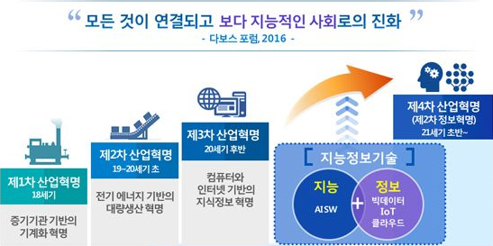

Welcome to this homepage.
인공지능, 로봇기술, 생명과학이 주도하는 차세대 산업혁명을 말한다.
▷1784년 영국에서 시작된 증기기관과 기계화로 대표되는 1차 산업혁명 ▷1870년 전기를 이용한 대량생산이 본격화된 2차 산업혁명 ▷1969년 인터넷이 이끈 컴퓨터 정보화 및 자동화 생산시스템이 주도한 3차 산업혁명에 이어 ▷로봇이나 인공지능(AI)을 통해 실제와 가상이 통합돼 사물을 자동적, 지능적으로 제어할 수 있는 가상 물리 시스템의 구축이 기대되는 산업상의 변화를 일컫는다.
| 인공지능 | 인간의 지능으로 할 수 있는 사고, 학습, 자기 개발 등을 컴퓨터가 할 수 있도록 하는 방법을 연구하는 컴퓨터 공학 및 정보기술의 한 분야로서, 컴퓨터가 인간의 지능적인 행동을 모방할 수 있도록 하는 것을 인공지능이라고 말하고 있다. |
| 빅데이터 | 빅데이터란 디지털 환경에서 생성되는 데이터로 그 규모가 방대하고, 생성 주기도 짧고, 형태도 수치 데이터뿐 아니라 문자와 영상 데이터를 포함하는 대규모 데이터를 말한다. 빅데이터 환경은 과거에 비해 데이터의 양이 폭증했다는 점과 함께 데이터의 종류도 다양해져 사람들의 행동은 물론 위치정보와 SNS를 통해 생각과 의견까지 분석하고 예측할 수 있다. |
| 사물 인터넷 | 사물인터넷(Internet of Things)은 세상에 존재하는 유형 혹은 무형의 객체들이 다양한 방식으로 서로 연결되어 개별 객체들이 제공하지 못했던 새로운 서비스를 제공하는 것을 말한다. 사물인터넷(Internet of Things)은 단어의 뜻 그대로 ‘사물들(things)’이 ‘서로 연결된(Internet)’ 것 혹은 ‘사물들로 구성된 인터넷’을 말한다. 기존의 인터넷이 컴퓨터나 무선 인터넷이 가능했던 휴대전화들이 서로 연결되어 구성되었던 것과는 달리, 사물인터넷은 책상, 자동차, 가방, 나무, 애완견 등 세상에 존재하는 모든 사물이 연결되어 구성된 인터넷이라 할 수 있다. |
| 클라우드 컴퓨팅 | 인터넷 상의 서버를 통하여 데이터 저장, 네트워크, 콘텐츠 사용 등 IT 관련 서비스를 한번에 사용할 수 있는 컴퓨팅 환경이다. |